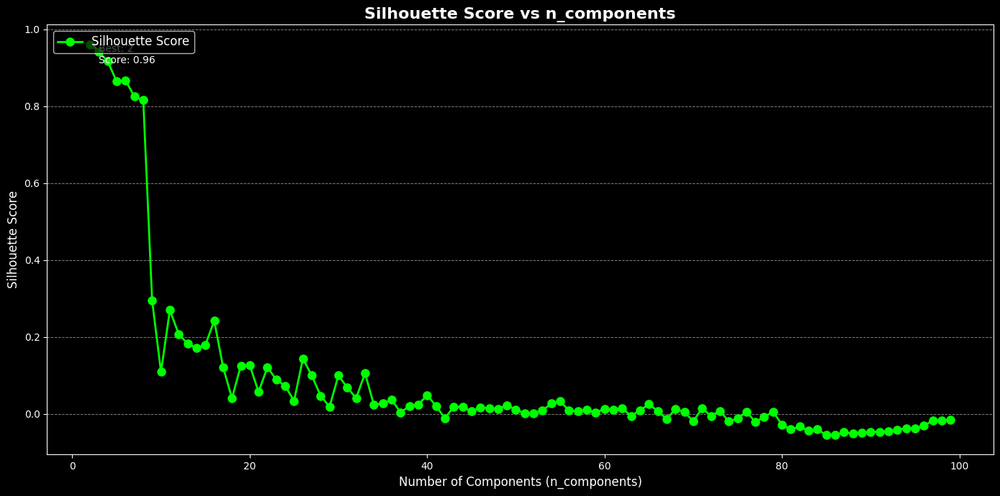
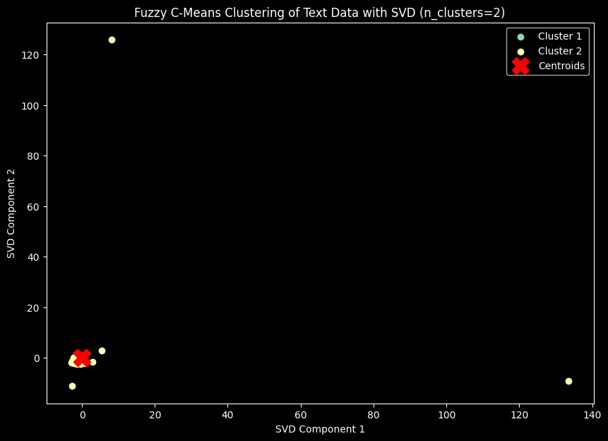
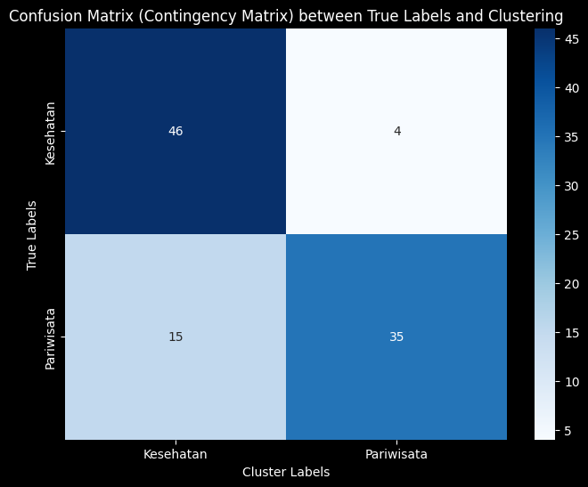

Tugas 6 Fuzzy c-means#
!pip install fuzzy-c-means
import pandas as pd
import numpy as np
from sklearn.feature_extraction.text import TfidfVectorizer
from sklearn.preprocessing import StandardScaler
from sklearn.decomposition import TruncatedSVD # Import TruncatedSVD untuk reduksi dimensi
import matplotlib.pyplot as plt
from fcmeans import FCM
from sklearn.metrics import silhouette_score
Requirement already satisfied: fuzzy-c-means in /usr/local/lib/python3.10/dist-packages (1.7.2)
Requirement already satisfied: joblib<2.0.0,>=1.2.0 in /usr/local/lib/python3.10/dist-packages (from fuzzy-c-means) (1.4.2)
Requirement already satisfied: numpy<2.0.0,>=1.21.1 in /usr/local/lib/python3.10/dist-packages (from fuzzy-c-means) (1.26.4)
Requirement already satisfied: pydantic<3.0.0,>=2.6.4 in /usr/local/lib/python3.10/dist-packages (from fuzzy-c-means) (2.9.2)
Requirement already satisfied: tabulate<0.9.0,>=0.8.9 in /usr/local/lib/python3.10/dist-packages (from fuzzy-c-means) (0.8.10)
Requirement already satisfied: tqdm<5.0.0,>=4.64.1 in /usr/local/lib/python3.10/dist-packages (from fuzzy-c-means) (4.66.6)
Requirement already satisfied: typer<0.10.0,>=0.9.0 in /usr/local/lib/python3.10/dist-packages (from fuzzy-c-means) (0.9.4)
Requirement already satisfied: annotated-types>=0.6.0 in /usr/local/lib/python3.10/dist-packages (from pydantic<3.0.0,>=2.6.4->fuzzy-c-means) (0.7.0)
Requirement already satisfied: pydantic-core==2.23.4 in /usr/local/lib/python3.10/dist-packages (from pydantic<3.0.0,>=2.6.4->fuzzy-c-means) (2.23.4)
Requirement already satisfied: typing-extensions>=4.6.1 in /usr/local/lib/python3.10/dist-packages (from pydantic<3.0.0,>=2.6.4->fuzzy-c-means) (4.12.2)
Requirement already satisfied: click<9.0.0,>=7.1.1 in /usr/local/lib/python3.10/dist-packages (from typer<0.10.0,>=0.9.0->fuzzy-c-means) (8.1.7)
from google.colab import files
# Upload file dari komputer
upload_file = files.upload()
---------------------------------------------------------------------------
KeyboardInterrupt Traceback (most recent call last)
<ipython-input-2-5ae78e3a93f1> in <cell line: 4>()
2
3 # Upload file dari komputer
----> 4 upload_file = files.upload()
/usr/local/lib/python3.10/dist-packages/google/colab/files.py in upload(target_dir)
70 """
71
---> 72 uploaded_files = _upload_files(multiple=True)
73 # Mapping from original filename to filename as saved locally.
74 local_filenames = dict()
/usr/local/lib/python3.10/dist-packages/google/colab/files.py in _upload_files(multiple)
162
163 # First result is always an indication that the file picker has completed.
--> 164 result = _output.eval_js(
165 'google.colab._files._uploadFiles("{input_id}", "{output_id}")'.format(
166 input_id=input_id, output_id=output_id
/usr/local/lib/python3.10/dist-packages/google/colab/output/_js.py in eval_js(script, ignore_result, timeout_sec)
38 if ignore_result:
39 return
---> 40 return _message.read_reply_from_input(request_id, timeout_sec)
41
42
/usr/local/lib/python3.10/dist-packages/google/colab/_message.py in read_reply_from_input(message_id, timeout_sec)
94 reply = _read_next_input_message()
95 if reply == _NOT_READY or not isinstance(reply, dict):
---> 96 time.sleep(0.025)
97 continue
98 if (
KeyboardInterrupt:
import pandas as pd
# Membaca file CSV
file_name = 'teks beneran bersih rill cuy.csv'
df = pd.read_csv(file_name)
df.head()
| judul | tanggal | isi | kategori | cleaned_text | norm_text | token_text | swremove_text | clean_text | kategori_encoded | |
|---|---|---|---|---|---|---|---|---|---|---|
| 0 | Badan Kurus Tak Berarti Bebas dari Kolesterol ... | Kamis, 05 Sep 2024 11:03 WIB | Jakarta - Tak sedikit yang beranggapan bahwa o... | Kesehatan | Jakarta Tak sedikit yang beranggapan bahwa ora... | jakarta tidak sedikit yang beranggapan bahwa o... | ['jakarta', 'tidak', 'sedikit', 'yang', 'beran... | ['jakarta', 'sedikit', 'beranggapan', 'orang',... | jakarta sedikit beranggapan orang berbadan kur... | 0 |
| 1 | Budaya Kerja Toksik di Jepang Picu 54 Karyawan... | Kamis, 05 Sep 2024 10:38 WIB | Jakarta -\n \n Istilah 'bekerja ... | Kesehatan | Jakarta Istilah bekerja sampai mati nampaknya ... | jakarta istilah bekerja sampai mati nampaknya ... | ['jakarta', 'istilah', 'bekerja', 'sampai', 'm... | ['jakarta', 'istilah', 'bekerja', 'mati', 'nam... | jakarta istilah bekerja mati nampaknya ssudah ... | 0 |
| 2 | Menyoal Serangan Jantung yang Dialami Faisal B... | Kamis, 05 Sep 2024 10:03 WIB | Jakarta - Faisal Basri meninggal dunia. Ekonom... | Kesehatan | Jakarta Faisal Basri meninggal dunia Ekonom Un... | jakarta faisal basri meninggal dunia ekonom un... | ['jakarta', 'faisal', 'basri', 'meninggal', 'd... | ['jakarta', 'faisal', 'basri', 'meninggal', 'd... | jakarta faisal basri meninggal dunia ekonom un... | 0 |
| 3 | Nyeri Kronis yang Bikin Paus Fransiskus Tak Bi... | Kamis, 05 Sep 2024 09:37 WIB | Jakarta - Pemimpin tertinggi Gereja Katolik se... | Kesehatan | Jakarta Pemimpin tertinggi Gereja Katolik sedu... | jakarta pemimpin tertinggi gereja katolik sedu... | ['jakarta', 'pemimpin', 'tertinggi', 'gereja',... | ['jakarta', 'pemimpin', 'tertinggi', 'gereja',... | jakarta pemimpin tertinggi gereja katolik sedu... | 0 |
| 4 | Perundungan PPDS Tak Cuma Terjadi di Undip, Be... | Kamis, 05 Sep 2024 08:35 WIB | Jakarta - Aksi bullying atau perundungan di ma... | Kesehatan | Jakarta Aksi bullying atau perundungan di masa... | jakarta aksi bullying atau perundungan di masa... | ['jakarta', 'aksi', 'bullying', 'atau', 'perun... | ['jakarta', 'aksi', 'bullying', 'perundungan',... | jakarta aksi bullying perundungan masa program... | 0 |
texts = df['clean_text']
# Step 2: Vektorisasi TF-IDF
tfidf_vectorizer = TfidfVectorizer()
tfidf_matrix = tfidf_vectorizer.fit_transform(texts)
X_tfidf = tfidf_matrix.toarray()
scaler = StandardScaler()
X_scaled = scaler.fit_transform(X_tfidf)
# Mendapatkan nama fitur dari TF-IDF
feature_names = tfidf_vectorizer.get_feature_names_out()
# Konversi TF-IDF hasil training ke DataFrame
df_train_tfidf = pd.DataFrame(tfidf_matrix.toarray(), columns=feature_names)
df_train_tfidf
df_train_tfidf.to_csv("tf-idf.csv", index=False)
X_tfidf.shape
(100, 6239)
from sklearn.metrics import adjusted_rand_score, normalized_mutual_info_score
from fcmeans import FCM
from sklearn.decomposition import TruncatedSVD
from sklearn.preprocessing import StandardScaler
import numpy as np
# Pastikan X_scaled sudah terdefinisi sebelumnya
# Inisialisasi variabel untuk menyimpan hasil
best_silhouette = -1
best_ari = -1
best_nmi = -1
best_n_components = 0
results = {}
# Asumsikan y_true adalah label asli dari dataset Anda
y_true = df['kategori_encoded'] # Ganti 'kategori' dengan nama kolom label asli
for n in range(2, 100): # Rentang nilai n_components
svd = TruncatedSVD(n_components=n, random_state=42)
data_reduced = svd.fit_transform(X_scaled)
# Fuzzy C-Means Clustering
fcm = FCM(n_clusters=2, m=2.0, max_iter=1000, error=0.00001, random_state=42)
fcm.fit(data_reduced)
cluster_labels = fcm.predict(data_reduced)
# Evaluasi dengan Silhouette Score, ARI, dan NMI
silhouette = silhouette_score(data_reduced, cluster_labels)
ari = adjusted_rand_score(y_true, cluster_labels)
nmi = normalized_mutual_info_score(y_true, cluster_labels)
results[n] = {
'silhouette': silhouette,
'ari': ari,
'nmi': nmi
}
# Log setiap iterasi
print(f"Iterasi dengan n_components={n}: Silhouette={silhouette}, ARI={ari}, NMI={nmi}")
# Perbarui nilai terbaik
if silhouette > best_silhouette:
best_silhouette = silhouette
best_n_components = n
if ari > best_ari:
best_ari = ari
if nmi > best_nmi:
best_nmi = nmi
Iterasi dengan n_components=2: Silhouette=0.9609456224110352, ARI=0.0, NMI=0.018639764244343528
Iterasi dengan n_components=3: Silhouette=0.9404878627957127, ARI=-0.0007766707522784365, NMI=0.0042289170055858855
Iterasi dengan n_components=4: Silhouette=0.9164433455314719, ARI=4.85601903559462e-05, NMI=0.012637056407904105
Iterasi dengan n_components=5: Silhouette=0.8641353965736649, ARI=0.004130624939255516, NMI=0.03348817079820381
Iterasi dengan n_components=6: Silhouette=0.8667871927985338, ARI=0.004130624939255516, NMI=0.03348817079820381
Iterasi dengan n_components=7: Silhouette=0.8249850655545596, ARI=0.007389132627638759, NMI=0.04469202501254566
Iterasi dengan n_components=8: Silhouette=0.815632615257052, ARI=0.0034364818206869723, NMI=0.023324640861378393
Iterasi dengan n_components=9: Silhouette=0.2944754484315648, ARI=0.12142123036264865, NMI=0.10805204632615578
Iterasi dengan n_components=10: Silhouette=0.10864507426457416, ARI=0.3068788249694002, NMI=0.2578242535998632
Iterasi dengan n_components=11: Silhouette=0.2693479409858241, ARI=0.03982241356114624, NMI=0.041828094549225966
Iterasi dengan n_components=12: Silhouette=0.2068989020151239, ARI=0.06954279933426884, NMI=0.06240837923076702
Iterasi dengan n_components=13: Silhouette=0.18219439569156584, ARI=0.37832390107760294, NMI=0.3180138549429572
Iterasi dengan n_components=14: Silhouette=0.17128061695518626, ARI=0.3535643742144011, NMI=0.2855817360372474
Iterasi dengan n_components=15: Silhouette=0.1784260302577336, ARI=0.456994074340097, NMI=0.3769685615198214
Iterasi dengan n_components=16: Silhouette=0.24180855319051972, ARI=0.37842534911329506, NMI=0.32885237991265603
Iterasi dengan n_components=17: Silhouette=0.12142492809687956, ARI=-0.009762906668734618, NMI=0.00028997790097287234
Iterasi dengan n_components=18: Silhouette=0.04011464519104109, ARI=0.4298989898989899, NMI=0.3492721107165225
Iterasi dengan n_components=19: Silhouette=0.12507501353500775, ARI=0.5430303030303031, NMI=0.4532839480340869
Iterasi dengan n_components=20: Silhouette=0.12633928246569745, ARI=-0.008521892447840141, NMI=0.0011646013497918254
Iterasi dengan n_components=21: Silhouette=0.0565930865088939, ARI=0.5135571915963368, NMI=0.42977137131885157
Iterasi dengan n_components=22: Silhouette=0.12084670913210699, ARI=0.004602879247869944, NMI=0.010789584794377008
Iterasi dengan n_components=23: Silhouette=0.08839065782013168, ARI=-0.0037223882059068424, NMI=0.004631680941037668
Iterasi dengan n_components=24: Silhouette=0.07225485488139927, ARI=-0.009696969696969697, NMI=0.0002925308140970916
Iterasi dengan n_components=25: Silhouette=0.03315099597587332, ARI=0.0043591125042856445, NMI=0.010435392710893103
Iterasi dengan n_components=26: Silhouette=0.14309310402808603, ARI=0.009793959575431853, NMI=0.014576828435880821
Iterasi dengan n_components=27: Silhouette=0.09914910424377721, ARI=-0.006530372353668641, NMI=0.002611220469271829
Iterasi dengan n_components=28: Silhouette=0.04625043953866248, ARI=0.004342857142857143, NMI=0.010412478777945247
Iterasi dengan n_components=29: Silhouette=0.018024282698405968, ARI=0.1681622859101649, NMI=0.13534965598921833
Iterasi dengan n_components=30: Silhouette=0.09937025021184505, ARI=0.015721422274463707, NMI=0.01871144634398399
Iterasi dengan n_components=31: Silhouette=0.06799013627843005, ARI=-0.0065632385173938065, NMI=0.0025998294462112
Iterasi dengan n_components=32: Silhouette=0.04058792770697673, ARI=0.05818181818181818, NMI=0.050037551925623425
Iterasi dengan n_components=33: Silhouette=0.10511089492562282, ARI=0.009923249864330567, NMI=0.014842747072989914
Iterasi dengan n_components=34: Silhouette=0.023173379236929425, ARI=0.12077578607111372, NMI=0.09653450898202479
Iterasi dengan n_components=35: Silhouette=0.026442590166086813, ARI=-0.010187588774060832, NMI=0.0
Iterasi dengan n_components=36: Silhouette=0.03648322856099927, ARI=0.08074805415311274, NMI=0.06627595469152042
Iterasi dengan n_components=37: Silhouette=0.003435569668783096, ARI=0.06937576499388005, NMI=0.0607708675871891
Iterasi dengan n_components=38: Silhouette=0.019475988787597844, ARI=0.12077578607111372, NMI=0.09653450898202479
Iterasi dengan n_components=39: Silhouette=0.02374156811819705, ARI=0.015673213498555126, NMI=0.018587207287721865
Iterasi dengan n_components=40: Silhouette=0.04811517062439924, ARI=-0.0037223882059068424, NMI=0.004631680941037668
Iterasi dengan n_components=41: Silhouette=0.0204014229412198, ARI=-6.530372353668641e-05, NMI=0.007261306984853738
Iterasi dengan n_components=42: Silhouette=-0.011831265663876019, ARI=0.023200323042472742, NMI=0.025896169931971025
Iterasi dengan n_components=43: Silhouette=0.01783565249448607, ARI=-0.0036732295033793712, NMI=0.004662264774345075
Iterasi dengan n_components=44: Silhouette=0.018220172862593798, ARI=-0.0037223882059068424, NMI=0.004631680941037668
Iterasi dengan n_components=45: Silhouette=0.00577341235492432, ARI=0.0003916433108546391, NMI=0.00773252967543183
Iterasi dengan n_components=46: Silhouette=0.016353379964321523, ARI=-0.003738775510204082, NMI=0.00462156117977532
Iterasi dengan n_components=47: Silhouette=0.014223987369441018, ARI=0.03878787878787879, NMI=0.03570031803557409
Iterasi dengan n_components=48: Silhouette=0.012336507548346445, ARI=0.00448913629017777, NMI=0.010621809793435164
Iterasi dengan n_components=49: Silhouette=0.022153143258217226, ARI=-0.006530372353668641, NMI=0.002611220469271829
Iterasi dengan n_components=50: Silhouette=0.010054645745595371, ARI=-0.010055665289998204, NMI=6.440383184243714e-16
Iterasi dengan n_components=51: Silhouette=0.0010352038640803177, ARI=-0.009466258094262714, NMI=0.0003017697373495547
Iterasi dengan n_components=52: Silhouette=0.0009700642968050039, ARI=0.09361077111383109, NMI=0.0797957030202867
Iterasi dengan n_components=53: Silhouette=0.007882143659931637, ARI=0.00448913629017777, NMI=0.010621809793435164
Iterasi dengan n_components=54: Silhouette=0.02661564941632787, ARI=0.28444444444444444, NMI=0.22582638531252477
Iterasi dengan n_components=55: Silhouette=0.03187421527462817, ARI=-0.003591309032142216, NMI=0.004713998200230879
Iterasi dengan n_components=56: Silhouette=0.008769188224132503, ARI=0.06913269886873766, NMI=0.058519792136740086
Iterasi dengan n_components=57: Silhouette=0.005959364078800655, ARI=0.009793959575431853, NMI=0.014576828435880821
Iterasi dengan n_components=58: Silhouette=0.010221792799541995, ARI=0.22274997551659975, NMI=0.18068148860961386
Iterasi dengan n_components=59: Silhouette=0.003256680578468022, ARI=0.08116807617462396, NMI=0.07083693545803353
Iterasi dengan n_components=60: Silhouette=0.012246915251385859, ARI=0.01580175974142575, NMI=0.018921669336916504
Iterasi dengan n_components=61: Silhouette=0.009877136796951104, ARI=-0.0036732295033793712, NMI=0.004662264774345075
Iterasi dengan n_components=62: Silhouette=0.013565869568740663, ARI=0.030346561321601725, NMI=0.02964327933391515
Iterasi dengan n_components=63: Silhouette=-0.005949031614481936, ARI=0.04854289723591032, NMI=0.045626023826804925
Iterasi dengan n_components=64: Silhouette=0.009003182597096659, ARI=0.12107711138310893, NMI=0.10161583526102293
Iterasi dengan n_components=65: Silhouette=0.024359775798592883, ARI=0.20363636363636364, NMI=0.16108192607888686
Iterasi dengan n_components=66: Silhouette=0.007154553602912899, ARI=0.009793959575431853, NMI=0.014576828435880821
Iterasi dengan n_components=67: Silhouette=-0.014030427384689322, ARI=0.18602261048304214, NMI=0.16455265253877288
Iterasi dengan n_components=68: Silhouette=0.012602788886081635, ARI=0.03045734991675644, NMI=0.030119699730181713
Iterasi dengan n_components=69: Silhouette=0.004284843976321852, ARI=0.03878787878787879, NMI=0.03570031803557409
Iterasi dengan n_components=70: Silhouette=-0.019919953498364305, ARI=0.040104173034834385, NMI=0.043823204084947665
Iterasi dengan n_components=71: Silhouette=0.013983533890090327, ARI=-0.0065632385173938065, NMI=0.0025998294462112
Iterasi dengan n_components=72: Silhouette=-0.00582797338732294, ARI=0.16875930268121114, NMI=0.15217136598067355
Iterasi dengan n_components=73: Silhouette=0.007140141499427398, ARI=-0.0036732295033793712, NMI=0.004662264774345075
Iterasi dengan n_components=74: Silhouette=-0.019649775703752898, ARI=0.15254928176615415, NMI=0.14732159517119764
Iterasi dengan n_components=75: Silhouette=-0.012839443628124449, ARI=0.1076281447598547, NMI=0.10211525294052909
Iterasi dengan n_components=76: Silhouette=0.0048013023683126585, ARI=0.022721986215001898, NMI=0.02415423012293781
Iterasi dengan n_components=77: Silhouette=-0.02103843470391284, ARI=0.13668774384501547, NMI=0.12886573678714794
Iterasi dengan n_components=78: Silhouette=-0.008774127735989823, ARI=0.09396564381148143, NMI=0.08472444119491121
Iterasi dengan n_components=79: Silhouette=0.005364587928339905, ARI=0.009632299221661245, NMI=0.014255592878046928
Iterasi dengan n_components=80: Silhouette=-0.028660598768997465, ARI=0.04986068338466051, NMI=0.056935743822353245
Iterasi dengan n_components=81: Silhouette=-0.04109971332336, ARI=0.05021663354725218, NMI=0.0608797766294899
Iterasi dengan n_components=82: Silhouette=-0.033601867460084964, ARI=0.0950285965684118, NMI=0.10345369088652681
Iterasi dengan n_components=83: Silhouette=-0.04436298322675165, ARI=0.0604824427480916, NMI=0.07461767443636569
Iterasi dengan n_components=84: Silhouette=-0.040968595310071576, ARI=0.040760969172684285, NMI=0.04918785501957698
Iterasi dengan n_components=85: Silhouette=-0.05555309910935392, ARI=0.13862618521727457, NMI=0.2127924293298967
Iterasi dengan n_components=86: Silhouette=-0.05564567934541368, ARI=0.12352309344790548, NMI=0.1744676128096239
Iterasi dengan n_components=87: Silhouette=-0.047980758569661906, ARI=0.1537634933815269, NMI=0.19955031236814003
Iterasi dengan n_components=88: Silhouette=-0.0519489192823101, ARI=0.13823358252383725, NMI=0.18688099581494588
Iterasi dengan n_components=89: Silhouette=-0.050014107818825336, ARI=0.10922601727919781, NMI=0.14489620677329224
Iterasi dengan n_components=90: Silhouette=-0.046933653255532004, ARI=0.1231377912372393, NMI=0.1566436964174006
Iterasi dengan n_components=91: Silhouette=-0.04690141825388358, ARI=0.1231377912372393, NMI=0.1566436964174006
Iterasi dengan n_components=92: Silhouette=-0.04636505431405298, ARI=0.1231377912372393, NMI=0.1566436964174006
Iterasi dengan n_components=93: Silhouette=-0.042307077076352825, ARI=0.10884885496183207, NMI=0.13190860114521943
Iterasi dengan n_components=94: Silhouette=-0.037433304781623475, ARI=0.10884885496183207, NMI=0.13190860114521943
Iterasi dengan n_components=95: Silhouette=-0.03883447594509382, ARI=0.1231377912372393, NMI=0.1566436964174006
Iterasi dengan n_components=96: Silhouette=-0.030618093841066438, ARI=0.13786870229007633, NMI=0.16867857255934546
Iterasi dengan n_components=97: Silhouette=-0.018401503332162047, ARI=0.0950285965684118, NMI=0.10345369088652681
Iterasi dengan n_components=98: Silhouette=-0.017283261274151217, ARI=0.08236602686592705, NMI=0.08755514506746456
Iterasi dengan n_components=99: Silhouette=-0.015944023992258718, ARI=0.07051344743276283, NMI=0.07371785121348161
# Menyimpan hasil terbaik untuk setiap metrik
best_silhouette_n_components = max(results, key=lambda x: results[x]['silhouette'])
best_ari_n_components = max(results, key=lambda x: results[x]['ari'])
best_nmi_n_components = max(results, key=lambda x: results[x]['nmi'])
# Menampilkan hasil terbaik
print(f"\nBest Silhouette Score is achieved by n_components={best_silhouette_n_components} with score: {results[best_silhouette_n_components]['silhouette']}")
print(f"Best ARI is achieved by n_components={best_ari_n_components} with score: {results[best_ari_n_components]['ari']}")
print(f"Best NMI is achieved by n_components={best_nmi_n_components} with score: {results[best_nmi_n_components]['nmi']}")
Best Silhouette Score is achieved by n_components=2 with score: 0.9609456224110352
Best ARI is achieved by n_components=19 with score: 0.5430303030303031
Best NMI is achieved by n_components=19 with score: 0.4532839480340869
# Mengurutkan hasil berdasarkan silhouette score (dari tertinggi ke terendah)
sorted_results = sorted(results.items(), key=lambda x: x[1]['silhouette'], reverse=True)
# Menampilkan hasil akhir
print(f"\nBest n_components: {best_n_components} with silhouette score: {best_silhouette}")
print("\nAll results (sorted by silhouette score):")
for n, score in sorted_results:
print(f"n_components={n}: Silhouette Score={score}")
Best n_components: 2 with silhouette score: 0.9609456224110352
All results (sorted by silhouette score):
n_components=2: Silhouette Score={'silhouette': 0.9609456224110352, 'ari': 0.0, 'nmi': 0.018639764244343528}
n_components=3: Silhouette Score={'silhouette': 0.9404878627957127, 'ari': -0.0007766707522784365, 'nmi': 0.0042289170055858855}
n_components=4: Silhouette Score={'silhouette': 0.9164433455314719, 'ari': 4.85601903559462e-05, 'nmi': 0.012637056407904105}
n_components=6: Silhouette Score={'silhouette': 0.8667871927985338, 'ari': 0.004130624939255516, 'nmi': 0.03348817079820381}
n_components=5: Silhouette Score={'silhouette': 0.8641353965736649, 'ari': 0.004130624939255516, 'nmi': 0.03348817079820381}
n_components=7: Silhouette Score={'silhouette': 0.8249850655545596, 'ari': 0.007389132627638759, 'nmi': 0.04469202501254566}
n_components=8: Silhouette Score={'silhouette': 0.815632615257052, 'ari': 0.0034364818206869723, 'nmi': 0.023324640861378393}
n_components=9: Silhouette Score={'silhouette': 0.2944754484315648, 'ari': 0.12142123036264865, 'nmi': 0.10805204632615578}
n_components=11: Silhouette Score={'silhouette': 0.2693479409858241, 'ari': 0.03982241356114624, 'nmi': 0.041828094549225966}
n_components=16: Silhouette Score={'silhouette': 0.24180855319051972, 'ari': 0.37842534911329506, 'nmi': 0.32885237991265603}
n_components=12: Silhouette Score={'silhouette': 0.2068989020151239, 'ari': 0.06954279933426884, 'nmi': 0.06240837923076702}
n_components=13: Silhouette Score={'silhouette': 0.18219439569156584, 'ari': 0.37832390107760294, 'nmi': 0.3180138549429572}
n_components=15: Silhouette Score={'silhouette': 0.1784260302577336, 'ari': 0.456994074340097, 'nmi': 0.3769685615198214}
n_components=14: Silhouette Score={'silhouette': 0.17128061695518626, 'ari': 0.3535643742144011, 'nmi': 0.2855817360372474}
n_components=26: Silhouette Score={'silhouette': 0.14309310402808603, 'ari': 0.009793959575431853, 'nmi': 0.014576828435880821}
n_components=20: Silhouette Score={'silhouette': 0.12633928246569745, 'ari': -0.008521892447840141, 'nmi': 0.0011646013497918254}
n_components=19: Silhouette Score={'silhouette': 0.12507501353500775, 'ari': 0.5430303030303031, 'nmi': 0.4532839480340869}
n_components=17: Silhouette Score={'silhouette': 0.12142492809687956, 'ari': -0.009762906668734618, 'nmi': 0.00028997790097287234}
n_components=22: Silhouette Score={'silhouette': 0.12084670913210699, 'ari': 0.004602879247869944, 'nmi': 0.010789584794377008}
n_components=10: Silhouette Score={'silhouette': 0.10864507426457416, 'ari': 0.3068788249694002, 'nmi': 0.2578242535998632}
n_components=33: Silhouette Score={'silhouette': 0.10511089492562282, 'ari': 0.009923249864330567, 'nmi': 0.014842747072989914}
n_components=30: Silhouette Score={'silhouette': 0.09937025021184505, 'ari': 0.015721422274463707, 'nmi': 0.01871144634398399}
n_components=27: Silhouette Score={'silhouette': 0.09914910424377721, 'ari': -0.006530372353668641, 'nmi': 0.002611220469271829}
n_components=23: Silhouette Score={'silhouette': 0.08839065782013168, 'ari': -0.0037223882059068424, 'nmi': 0.004631680941037668}
n_components=24: Silhouette Score={'silhouette': 0.07225485488139927, 'ari': -0.009696969696969697, 'nmi': 0.0002925308140970916}
n_components=31: Silhouette Score={'silhouette': 0.06799013627843005, 'ari': -0.0065632385173938065, 'nmi': 0.0025998294462112}
n_components=21: Silhouette Score={'silhouette': 0.0565930865088939, 'ari': 0.5135571915963368, 'nmi': 0.42977137131885157}
n_components=40: Silhouette Score={'silhouette': 0.04811517062439924, 'ari': -0.0037223882059068424, 'nmi': 0.004631680941037668}
n_components=28: Silhouette Score={'silhouette': 0.04625043953866248, 'ari': 0.004342857142857143, 'nmi': 0.010412478777945247}
n_components=32: Silhouette Score={'silhouette': 0.04058792770697673, 'ari': 0.05818181818181818, 'nmi': 0.050037551925623425}
n_components=18: Silhouette Score={'silhouette': 0.04011464519104109, 'ari': 0.4298989898989899, 'nmi': 0.3492721107165225}
n_components=36: Silhouette Score={'silhouette': 0.03648322856099927, 'ari': 0.08074805415311274, 'nmi': 0.06627595469152042}
n_components=25: Silhouette Score={'silhouette': 0.03315099597587332, 'ari': 0.0043591125042856445, 'nmi': 0.010435392710893103}
n_components=55: Silhouette Score={'silhouette': 0.03187421527462817, 'ari': -0.003591309032142216, 'nmi': 0.004713998200230879}
n_components=54: Silhouette Score={'silhouette': 0.02661564941632787, 'ari': 0.28444444444444444, 'nmi': 0.22582638531252477}
n_components=35: Silhouette Score={'silhouette': 0.026442590166086813, 'ari': -0.010187588774060832, 'nmi': 0.0}
n_components=65: Silhouette Score={'silhouette': 0.024359775798592883, 'ari': 0.20363636363636364, 'nmi': 0.16108192607888686}
n_components=39: Silhouette Score={'silhouette': 0.02374156811819705, 'ari': 0.015673213498555126, 'nmi': 0.018587207287721865}
n_components=34: Silhouette Score={'silhouette': 0.023173379236929425, 'ari': 0.12077578607111372, 'nmi': 0.09653450898202479}
n_components=49: Silhouette Score={'silhouette': 0.022153143258217226, 'ari': -0.006530372353668641, 'nmi': 0.002611220469271829}
n_components=41: Silhouette Score={'silhouette': 0.0204014229412198, 'ari': -6.530372353668641e-05, 'nmi': 0.007261306984853738}
n_components=38: Silhouette Score={'silhouette': 0.019475988787597844, 'ari': 0.12077578607111372, 'nmi': 0.09653450898202479}
n_components=44: Silhouette Score={'silhouette': 0.018220172862593798, 'ari': -0.0037223882059068424, 'nmi': 0.004631680941037668}
n_components=29: Silhouette Score={'silhouette': 0.018024282698405968, 'ari': 0.1681622859101649, 'nmi': 0.13534965598921833}
n_components=43: Silhouette Score={'silhouette': 0.01783565249448607, 'ari': -0.0036732295033793712, 'nmi': 0.004662264774345075}
n_components=46: Silhouette Score={'silhouette': 0.016353379964321523, 'ari': -0.003738775510204082, 'nmi': 0.00462156117977532}
n_components=47: Silhouette Score={'silhouette': 0.014223987369441018, 'ari': 0.03878787878787879, 'nmi': 0.03570031803557409}
n_components=71: Silhouette Score={'silhouette': 0.013983533890090327, 'ari': -0.0065632385173938065, 'nmi': 0.0025998294462112}
n_components=62: Silhouette Score={'silhouette': 0.013565869568740663, 'ari': 0.030346561321601725, 'nmi': 0.02964327933391515}
n_components=68: Silhouette Score={'silhouette': 0.012602788886081635, 'ari': 0.03045734991675644, 'nmi': 0.030119699730181713}
n_components=48: Silhouette Score={'silhouette': 0.012336507548346445, 'ari': 0.00448913629017777, 'nmi': 0.010621809793435164}
n_components=60: Silhouette Score={'silhouette': 0.012246915251385859, 'ari': 0.01580175974142575, 'nmi': 0.018921669336916504}
n_components=58: Silhouette Score={'silhouette': 0.010221792799541995, 'ari': 0.22274997551659975, 'nmi': 0.18068148860961386}
n_components=50: Silhouette Score={'silhouette': 0.010054645745595371, 'ari': -0.010055665289998204, 'nmi': 6.440383184243714e-16}
n_components=61: Silhouette Score={'silhouette': 0.009877136796951104, 'ari': -0.0036732295033793712, 'nmi': 0.004662264774345075}
n_components=64: Silhouette Score={'silhouette': 0.009003182597096659, 'ari': 0.12107711138310893, 'nmi': 0.10161583526102293}
n_components=56: Silhouette Score={'silhouette': 0.008769188224132503, 'ari': 0.06913269886873766, 'nmi': 0.058519792136740086}
n_components=53: Silhouette Score={'silhouette': 0.007882143659931637, 'ari': 0.00448913629017777, 'nmi': 0.010621809793435164}
n_components=66: Silhouette Score={'silhouette': 0.007154553602912899, 'ari': 0.009793959575431853, 'nmi': 0.014576828435880821}
n_components=73: Silhouette Score={'silhouette': 0.007140141499427398, 'ari': -0.0036732295033793712, 'nmi': 0.004662264774345075}
n_components=57: Silhouette Score={'silhouette': 0.005959364078800655, 'ari': 0.009793959575431853, 'nmi': 0.014576828435880821}
n_components=45: Silhouette Score={'silhouette': 0.00577341235492432, 'ari': 0.0003916433108546391, 'nmi': 0.00773252967543183}
n_components=79: Silhouette Score={'silhouette': 0.005364587928339905, 'ari': 0.009632299221661245, 'nmi': 0.014255592878046928}
n_components=76: Silhouette Score={'silhouette': 0.0048013023683126585, 'ari': 0.022721986215001898, 'nmi': 0.02415423012293781}
n_components=69: Silhouette Score={'silhouette': 0.004284843976321852, 'ari': 0.03878787878787879, 'nmi': 0.03570031803557409}
n_components=37: Silhouette Score={'silhouette': 0.003435569668783096, 'ari': 0.06937576499388005, 'nmi': 0.0607708675871891}
n_components=59: Silhouette Score={'silhouette': 0.003256680578468022, 'ari': 0.08116807617462396, 'nmi': 0.07083693545803353}
n_components=51: Silhouette Score={'silhouette': 0.0010352038640803177, 'ari': -0.009466258094262714, 'nmi': 0.0003017697373495547}
n_components=52: Silhouette Score={'silhouette': 0.0009700642968050039, 'ari': 0.09361077111383109, 'nmi': 0.0797957030202867}
n_components=72: Silhouette Score={'silhouette': -0.00582797338732294, 'ari': 0.16875930268121114, 'nmi': 0.15217136598067355}
n_components=63: Silhouette Score={'silhouette': -0.005949031614481936, 'ari': 0.04854289723591032, 'nmi': 0.045626023826804925}
n_components=78: Silhouette Score={'silhouette': -0.008774127735989823, 'ari': 0.09396564381148143, 'nmi': 0.08472444119491121}
n_components=42: Silhouette Score={'silhouette': -0.011831265663876019, 'ari': 0.023200323042472742, 'nmi': 0.025896169931971025}
n_components=75: Silhouette Score={'silhouette': -0.012839443628124449, 'ari': 0.1076281447598547, 'nmi': 0.10211525294052909}
n_components=67: Silhouette Score={'silhouette': -0.014030427384689322, 'ari': 0.18602261048304214, 'nmi': 0.16455265253877288}
n_components=99: Silhouette Score={'silhouette': -0.015944023992258718, 'ari': 0.07051344743276283, 'nmi': 0.07371785121348161}
n_components=98: Silhouette Score={'silhouette': -0.017283261274151217, 'ari': 0.08236602686592705, 'nmi': 0.08755514506746456}
n_components=97: Silhouette Score={'silhouette': -0.018401503332162047, 'ari': 0.0950285965684118, 'nmi': 0.10345369088652681}
n_components=74: Silhouette Score={'silhouette': -0.019649775703752898, 'ari': 0.15254928176615415, 'nmi': 0.14732159517119764}
n_components=70: Silhouette Score={'silhouette': -0.019919953498364305, 'ari': 0.040104173034834385, 'nmi': 0.043823204084947665}
n_components=77: Silhouette Score={'silhouette': -0.02103843470391284, 'ari': 0.13668774384501547, 'nmi': 0.12886573678714794}
n_components=80: Silhouette Score={'silhouette': -0.028660598768997465, 'ari': 0.04986068338466051, 'nmi': 0.056935743822353245}
n_components=96: Silhouette Score={'silhouette': -0.030618093841066438, 'ari': 0.13786870229007633, 'nmi': 0.16867857255934546}
n_components=82: Silhouette Score={'silhouette': -0.033601867460084964, 'ari': 0.0950285965684118, 'nmi': 0.10345369088652681}
n_components=94: Silhouette Score={'silhouette': -0.037433304781623475, 'ari': 0.10884885496183207, 'nmi': 0.13190860114521943}
n_components=95: Silhouette Score={'silhouette': -0.03883447594509382, 'ari': 0.1231377912372393, 'nmi': 0.1566436964174006}
n_components=84: Silhouette Score={'silhouette': -0.040968595310071576, 'ari': 0.040760969172684285, 'nmi': 0.04918785501957698}
n_components=81: Silhouette Score={'silhouette': -0.04109971332336, 'ari': 0.05021663354725218, 'nmi': 0.0608797766294899}
n_components=93: Silhouette Score={'silhouette': -0.042307077076352825, 'ari': 0.10884885496183207, 'nmi': 0.13190860114521943}
n_components=83: Silhouette Score={'silhouette': -0.04436298322675165, 'ari': 0.0604824427480916, 'nmi': 0.07461767443636569}
n_components=92: Silhouette Score={'silhouette': -0.04636505431405298, 'ari': 0.1231377912372393, 'nmi': 0.1566436964174006}
n_components=91: Silhouette Score={'silhouette': -0.04690141825388358, 'ari': 0.1231377912372393, 'nmi': 0.1566436964174006}
n_components=90: Silhouette Score={'silhouette': -0.046933653255532004, 'ari': 0.1231377912372393, 'nmi': 0.1566436964174006}
n_components=87: Silhouette Score={'silhouette': -0.047980758569661906, 'ari': 0.1537634933815269, 'nmi': 0.19955031236814003}
n_components=89: Silhouette Score={'silhouette': -0.050014107818825336, 'ari': 0.10922601727919781, 'nmi': 0.14489620677329224}
n_components=88: Silhouette Score={'silhouette': -0.0519489192823101, 'ari': 0.13823358252383725, 'nmi': 0.18688099581494588}
n_components=85: Silhouette Score={'silhouette': -0.05555309910935392, 'ari': 0.13862618521727457, 'nmi': 0.2127924293298967}
n_components=86: Silhouette Score={'silhouette': -0.05564567934541368, 'ari': 0.12352309344790548, 'nmi': 0.1744676128096239}
import matplotlib.pyplot as plt
# Data untuk plotting
n_components = list(results.keys())
silhouette_scores = [metrics['silhouette'] for metrics in results.values()]
# Ganti dengan style bawaan yang mirip
plt.style.use("dark_background")
# Membuat figure dengan nuansa grafik trading
plt.figure(figsize=(14, 7))
# Plot garis dengan marker
plt.plot(n_components, silhouette_scores, label="Silhouette Score", color="lime", linewidth=2, marker="o", markersize=8)
# Menambahkan grid horizontal
plt.grid(axis="y", color="gray", linestyle="--", linewidth=0.7)
# Menambahkan judul dan label
plt.title("Silhouette Score vs n_components", fontsize=16, fontweight="bold", color="white")
plt.xlabel("Number of Components (n_components)", fontsize=12, color="white")
plt.ylabel("Silhouette Score", fontsize=12, color="white")
# Menambahkan anotasi untuk nilai maksimum
max_score = max(silhouette_scores)
best_n = n_components[silhouette_scores.index(max_score)]
plt.annotate(f"Best: {best_n}\nScore: {max_score:.2f}",
xy=(best_n, max_score), xytext=(best_n + 1, max_score - 0.05),
arrowprops=dict(facecolor='red', arrowstyle="->"),
fontsize=10, color="white")
# Menambahkan legenda
plt.legend(fontsize=12, loc="upper left", facecolor="black", edgecolor="white", framealpha=0.7)
# Menampilkan grafik
plt.tight_layout()
plt.show()

Clustering#
# Membaca file CSV
file_name = 'teks beneran bersih rill cuy.csv'
df = pd.read_csv(file_name)
df
| judul | tanggal | isi | kategori | cleaned_text | norm_text | token_text | swremove_text | clean_text | kategori_encoded | |
|---|---|---|---|---|---|---|---|---|---|---|
| 0 | Badan Kurus Tak Berarti Bebas dari Kolesterol ... | Kamis, 05 Sep 2024 11:03 WIB | Jakarta - Tak sedikit yang beranggapan bahwa o... | Kesehatan | Jakarta Tak sedikit yang beranggapan bahwa ora... | jakarta tidak sedikit yang beranggapan bahwa o... | ['jakarta', 'tidak', 'sedikit', 'yang', 'beran... | ['jakarta', 'sedikit', 'beranggapan', 'orang',... | jakarta sedikit beranggapan orang berbadan kur... | 0 |
| 1 | Budaya Kerja Toksik di Jepang Picu 54 Karyawan... | Kamis, 05 Sep 2024 10:38 WIB | Jakarta -\n \n Istilah 'bekerja ... | Kesehatan | Jakarta Istilah bekerja sampai mati nampaknya ... | jakarta istilah bekerja sampai mati nampaknya ... | ['jakarta', 'istilah', 'bekerja', 'sampai', 'm... | ['jakarta', 'istilah', 'bekerja', 'mati', 'nam... | jakarta istilah bekerja mati nampaknya ssudah ... | 0 |
| 2 | Menyoal Serangan Jantung yang Dialami Faisal B... | Kamis, 05 Sep 2024 10:03 WIB | Jakarta - Faisal Basri meninggal dunia. Ekonom... | Kesehatan | Jakarta Faisal Basri meninggal dunia Ekonom Un... | jakarta faisal basri meninggal dunia ekonom un... | ['jakarta', 'faisal', 'basri', 'meninggal', 'd... | ['jakarta', 'faisal', 'basri', 'meninggal', 'd... | jakarta faisal basri meninggal dunia ekonom un... | 0 |
| 3 | Nyeri Kronis yang Bikin Paus Fransiskus Tak Bi... | Kamis, 05 Sep 2024 09:37 WIB | Jakarta - Pemimpin tertinggi Gereja Katolik se... | Kesehatan | Jakarta Pemimpin tertinggi Gereja Katolik sedu... | jakarta pemimpin tertinggi gereja katolik sedu... | ['jakarta', 'pemimpin', 'tertinggi', 'gereja',... | ['jakarta', 'pemimpin', 'tertinggi', 'gereja',... | jakarta pemimpin tertinggi gereja katolik sedu... | 0 |
| 4 | Perundungan PPDS Tak Cuma Terjadi di Undip, Be... | Kamis, 05 Sep 2024 08:35 WIB | Jakarta - Aksi bullying atau perundungan di ma... | Kesehatan | Jakarta Aksi bullying atau perundungan di masa... | jakarta aksi bullying atau perundungan di masa... | ['jakarta', 'aksi', 'bullying', 'atau', 'perun... | ['jakarta', 'aksi', 'bullying', 'perundungan',... | jakarta aksi bullying perundungan masa program... | 0 |
| ... | ... | ... | ... | ... | ... | ... | ... | ... | ... | ... |
| 95 | Iwh, Pekerja Speedboat Thailand Pamer BAB ke L... | Rabu, 04 Sep 2024 05:01 WIB | Jakarta - Warga Thailand dibuat jijik dengan k... | Pariwisata | Jakarta Warga Thailand dibuat jijik dengan kel... | jakarta warga thailand dibuat jijik dengan kel... | ['jakarta', 'warga', 'thailand', 'dibuat', 'ji... | ['jakarta', 'warga', 'thailand', 'dibuat', 'ji... | jakarta warga thailand dibuat jijik kelakuan s... | 1 |
| 96 | Ogah Bayar Layanan, 3 Turis Palestina Keroyok ... | Selasa, 03 Sep 2024 21:05 WIB | Taba - Seorang staf hotel di Mesir tewas usai ... | Pariwisata | Taba Seorang staf hotel di Mesir tewas usai be... | taba seorang staf hotel di mesir tewas usai be... | ['taba', 'seorang', 'staf', 'hotel', 'di', 'me... | ['taba', 'seorang', 'staf', 'hotel', 'mesir', ... | taba seorang staf hotel mesir tewas usai berke... | 1 |
| 97 | Licik, Keluarga Taruh Kecoa di Piring Agar Mak... | Selasa, 03 Sep 2024 20:37 WIB | Jakarta - Keluarga asal Meksiko dituduh melaku... | Pariwisata | Jakarta Keluarga asal Meksiko dituduh melakuka... | jakarta keluarga asal meksiko dituduh melakuka... | ['jakarta', 'keluarga', 'asal', 'meksiko', 'di... | ['jakarta', 'keluarga', 'asal', 'meksiko', 'di... | jakarta keluarga asal meksiko dituduh melakuka... | 1 |
| 98 | Terulang Lagi, Triatlon Paralimpiade Ditunda g... | Selasa, 03 Sep 2024 20:05 WIB | Paris - Saat Olimpiade Paris 2024 lalu, kompet... | Pariwisata | Paris Saat Olimpiade Paris lalu kompetisi tria... | paris saat olimpiade paris lalu kompetisi tria... | ['paris', 'saat', 'olimpiade', 'paris', 'lalu'... | ['paris', 'olimpiade', 'paris', 'lalu', 'kompe... | paris olimpiade paris lalu kompetisi triatlon ... | 1 |
| 99 | Wow, Super Air Jet Buka 8 Rute Baru dari Semar... | Selasa, 03 Sep 2024 19:37 WIB | Jakarta - Super Air Jet membuka delapan rute b... | Pariwisata | Jakarta Super Air Jet membuka delapan rute bar... | jakarta super air jet membuka delapan rute bar... | ['jakarta', 'super', 'air', 'jet', 'membuka', ... | ['jakarta', 'super', 'air', 'jet', 'membuka', ... | jakarta super air jet membuka delapan rute bar... | 1 |
100 rows × 10 columns
from fcmeans import FCM
from sklearn.decomposition import TruncatedSVD
from sklearn.feature_extraction.text import TfidfVectorizer
from sklearn.preprocessing import StandardScaler
from sklearn.metrics import silhouette_score
import matplotlib.pyplot as plt
import numpy as np
import pandas as pd
random_seed = 42 # Tetapkan seed untuk konsistensi
# Step 2: Vektorisasi TF-IDF
tfidf_vectorizer = TfidfVectorizer()
tfidf_matrix = tfidf_vectorizer.fit_transform(df['clean_text'])
tfidf = tfidf_matrix.toarray()
# Step 3: Normalisasi Hasil TF-IDF
scaler = StandardScaler()
data_normalisasi = scaler.fit_transform(tfidf)
# Step 4: Reduksi dimensi menggunakan SVD
svd = TruncatedSVD(n_components=16, random_state=random_seed) # Dimensi diatur ke 2 untuk visualisasi
data_cluster = svd.fit_transform(data_normalisasi)
# Fuzzy C-Means Clustering
n_clusters = 2 # Ganti sesuai kebutuhan
fcm = FCM(n_clusters=n_clusters, m=2.0, max_iter=1000, epsilon=0.00001, random_state=random_seed)
fcm.fit(data_cluster)
# Mendapatkan hasil clustering
membership = fcm.u
cluster_labels = np.argmax(membership, axis=1) # Menentukan cluster untuk setiap data
# Tambahkan hasil klasterisasi ke dalam DataFrame
df['Cluster'] = cluster_labels
# Tampilkan jumlah data pada setiap cluster
cluster_counts = df['Cluster'].value_counts()
# Hitung Silhouette Score
silhouette_avg = silhouette_score(data_cluster, cluster_labels)
print(f"Silhouette Score: {silhouette_avg:.4f}")
# Cetak hasil jumlah data per cluster
print("Jumlah data pada setiap cluster:")
print(cluster_counts)
# Visualisasi hasil clustering
plt.figure(figsize=(10, 7))
# Plot titik data dalam ruang 2D yang sudah direduksi, dengan warna berdasarkan cluster
for i in range(n_clusters):
cluster_data = data_cluster[cluster_labels == i] # Filter data per cluster
plt.scatter(cluster_data[:, 0], cluster_data[:, 1], label=f'Cluster {i+1}')
# Plot centroid
cluster_centers = fcm.centers
plt.scatter(cluster_centers[:, 0], cluster_centers[:, 1], s=300, c='red', marker='X', label='Centroids')
plt.title(f'Fuzzy C-Means Clustering of Text Data with SVD (n_clusters={n_clusters})')
plt.xlabel('SVD Component 1')
plt.ylabel('SVD Component 2')
plt.legend()
plt.show()
Silhouette Score: 0.2418
Jumlah data pada setiap cluster:
Cluster
0 61
1 39
Name: count, dtype: int64

# Menambahkan hasil klasterisasi ke dalam DataFrame
df['Cluster'] = cluster_labels
df
| judul | tanggal | isi | kategori | cleaned_text | norm_text | token_text | swremove_text | clean_text | kategori_encoded | Cluster | |
|---|---|---|---|---|---|---|---|---|---|---|---|
| 0 | Badan Kurus Tak Berarti Bebas dari Kolesterol ... | Kamis, 05 Sep 2024 11:03 WIB | Jakarta - Tak sedikit yang beranggapan bahwa o... | Kesehatan | Jakarta Tak sedikit yang beranggapan bahwa ora... | jakarta tidak sedikit yang beranggapan bahwa o... | ['jakarta', 'tidak', 'sedikit', 'yang', 'beran... | ['jakarta', 'sedikit', 'beranggapan', 'orang',... | jakarta sedikit beranggapan orang berbadan kur... | 0 | 0 |
| 1 | Budaya Kerja Toksik di Jepang Picu 54 Karyawan... | Kamis, 05 Sep 2024 10:38 WIB | Jakarta -\n \n Istilah 'bekerja ... | Kesehatan | Jakarta Istilah bekerja sampai mati nampaknya ... | jakarta istilah bekerja sampai mati nampaknya ... | ['jakarta', 'istilah', 'bekerja', 'sampai', 'm... | ['jakarta', 'istilah', 'bekerja', 'mati', 'nam... | jakarta istilah bekerja mati nampaknya ssudah ... | 0 | 1 |
| 2 | Menyoal Serangan Jantung yang Dialami Faisal B... | Kamis, 05 Sep 2024 10:03 WIB | Jakarta - Faisal Basri meninggal dunia. Ekonom... | Kesehatan | Jakarta Faisal Basri meninggal dunia Ekonom Un... | jakarta faisal basri meninggal dunia ekonom un... | ['jakarta', 'faisal', 'basri', 'meninggal', 'd... | ['jakarta', 'faisal', 'basri', 'meninggal', 'd... | jakarta faisal basri meninggal dunia ekonom un... | 0 | 0 |
| 3 | Nyeri Kronis yang Bikin Paus Fransiskus Tak Bi... | Kamis, 05 Sep 2024 09:37 WIB | Jakarta - Pemimpin tertinggi Gereja Katolik se... | Kesehatan | Jakarta Pemimpin tertinggi Gereja Katolik sedu... | jakarta pemimpin tertinggi gereja katolik sedu... | ['jakarta', 'pemimpin', 'tertinggi', 'gereja',... | ['jakarta', 'pemimpin', 'tertinggi', 'gereja',... | jakarta pemimpin tertinggi gereja katolik sedu... | 0 | 0 |
| 4 | Perundungan PPDS Tak Cuma Terjadi di Undip, Be... | Kamis, 05 Sep 2024 08:35 WIB | Jakarta - Aksi bullying atau perundungan di ma... | Kesehatan | Jakarta Aksi bullying atau perundungan di masa... | jakarta aksi bullying atau perundungan di masa... | ['jakarta', 'aksi', 'bullying', 'atau', 'perun... | ['jakarta', 'aksi', 'bullying', 'perundungan',... | jakarta aksi bullying perundungan masa program... | 0 | 0 |
| ... | ... | ... | ... | ... | ... | ... | ... | ... | ... | ... | ... |
| 95 | Iwh, Pekerja Speedboat Thailand Pamer BAB ke L... | Rabu, 04 Sep 2024 05:01 WIB | Jakarta - Warga Thailand dibuat jijik dengan k... | Pariwisata | Jakarta Warga Thailand dibuat jijik dengan kel... | jakarta warga thailand dibuat jijik dengan kel... | ['jakarta', 'warga', 'thailand', 'dibuat', 'ji... | ['jakarta', 'warga', 'thailand', 'dibuat', 'ji... | jakarta warga thailand dibuat jijik kelakuan s... | 1 | 1 |
| 96 | Ogah Bayar Layanan, 3 Turis Palestina Keroyok ... | Selasa, 03 Sep 2024 21:05 WIB | Taba - Seorang staf hotel di Mesir tewas usai ... | Pariwisata | Taba Seorang staf hotel di Mesir tewas usai be... | taba seorang staf hotel di mesir tewas usai be... | ['taba', 'seorang', 'staf', 'hotel', 'di', 'me... | ['taba', 'seorang', 'staf', 'hotel', 'mesir', ... | taba seorang staf hotel mesir tewas usai berke... | 1 | 1 |
| 97 | Licik, Keluarga Taruh Kecoa di Piring Agar Mak... | Selasa, 03 Sep 2024 20:37 WIB | Jakarta - Keluarga asal Meksiko dituduh melaku... | Pariwisata | Jakarta Keluarga asal Meksiko dituduh melakuka... | jakarta keluarga asal meksiko dituduh melakuka... | ['jakarta', 'keluarga', 'asal', 'meksiko', 'di... | ['jakarta', 'keluarga', 'asal', 'meksiko', 'di... | jakarta keluarga asal meksiko dituduh melakuka... | 1 | 1 |
| 98 | Terulang Lagi, Triatlon Paralimpiade Ditunda g... | Selasa, 03 Sep 2024 20:05 WIB | Paris - Saat Olimpiade Paris 2024 lalu, kompet... | Pariwisata | Paris Saat Olimpiade Paris lalu kompetisi tria... | paris saat olimpiade paris lalu kompetisi tria... | ['paris', 'saat', 'olimpiade', 'paris', 'lalu'... | ['paris', 'olimpiade', 'paris', 'lalu', 'kompe... | paris olimpiade paris lalu kompetisi triatlon ... | 1 | 1 |
| 99 | Wow, Super Air Jet Buka 8 Rute Baru dari Semar... | Selasa, 03 Sep 2024 19:37 WIB | Jakarta - Super Air Jet membuka delapan rute b... | Pariwisata | Jakarta Super Air Jet membuka delapan rute bar... | jakarta super air jet membuka delapan rute bar... | ['jakarta', 'super', 'air', 'jet', 'membuka', ... | ['jakarta', 'super', 'air', 'jet', 'membuka', ... | jakarta super air jet membuka delapan rute bar... | 1 | 0 |
100 rows × 11 columns
from sklearn.preprocessing import LabelEncoder
from sklearn.metrics import confusion_matrix
import seaborn as sns
import matplotlib.pyplot as plt
# Ambil kolom kategori dari dataframe sebagai label asli (true labels)
true_labels = df['kategori'] # Ganti 'kategori' dengan nama kolom kategori di DataFrame Anda
# Gunakan LabelEncoder untuk mengubah kategori menjadi angka
label_encoder = LabelEncoder()
true_labels_encoded = label_encoder.fit_transform(true_labels)
# Hitung confusion matrix antara true labels dan hasil clustering
conf_matrix = confusion_matrix(true_labels_encoded, cluster_labels)
# Tampilkan confusion matrix menggunakan heatmap untuk visualisasi
plt.figure(figsize=(8, 6))
sns.heatmap(conf_matrix, annot=True, fmt='d', cmap='Blues', xticklabels=label_encoder.classes_, yticklabels=label_encoder.classes_)
plt.title('Confusion Matrix (Contingency Matrix) between True Labels and Clustering')
plt.xlabel('Cluster Labels')
plt.ylabel('True Labels')
plt.show()
# Cetak confusion matrix secara numerik
print("Confusion Matrix (Contingency Matrix):")
print(conf_matrix)

Confusion Matrix (Contingency Matrix):
[[46 4]
[15 35]]
# Tambahkan kolom ID jika belum ada
df['id'] = df.index
# Ambil kolom id, kategori_encoded, dan Cluster
selected_columns = df[['id', 'kategori_encoded', 'Cluster']]
# Tampilkan DataFrame yang hanya berisi kolom yang dipilih
print(selected_columns)
id kategori_encoded Cluster
0 0 0 0
1 1 0 1
2 2 0 0
3 3 0 0
4 4 0 0
.. .. ... ...
95 95 1 1
96 96 1 1
97 97 1 1
98 98 1 1
99 99 1 0
[100 rows x 3 columns]
# Ambil semua anggota Cluster 0
cluster_0 = selected_columns[selected_columns['Cluster'] == 0]['id'].tolist()
# Ambil semua anggota Cluster 1
cluster_1 = selected_columns[selected_columns['Cluster'] == 1]['id'].tolist()
# Tampilkan hasil dalam bentuk list
print("Anggota Cluster 0:", cluster_0)
print("Anggota Cluster 1:", cluster_1)
Anggota Cluster 0: [0, 2, 3, 4, 5, 6, 7, 8, 9, 10, 11, 12, 13, 15, 16, 17, 18, 19, 20, 21, 22, 23, 24, 25, 26, 27, 28, 29, 30, 31, 32, 33, 34, 35, 37, 38, 39, 40, 41, 42, 43, 44, 46, 47, 48, 49, 50, 55, 60, 65, 68, 69, 72, 77, 78, 80, 82, 83, 87, 91, 99]
Anggota Cluster 1: [1, 14, 36, 45, 51, 52, 53, 54, 56, 57, 58, 59, 61, 62, 63, 64, 66, 67, 70, 71, 73, 74, 75, 76, 79, 81, 84, 85, 86, 88, 89, 90, 92, 93, 94, 95, 96, 97, 98]
from sklearn.pipeline import Pipeline
from sklearn.feature_extraction.text import TfidfVectorizer
from sklearn.preprocessing import StandardScaler, FunctionTransformer
from sklearn.decomposition import TruncatedSVD
import joblib
import pandas as pd
# Membaca data
data = df['clean_text']
# Fungsi untuk menerapkan FCM dalam pipeline
def fit_fcm(X):
fcm = FCM(
n_clusters=2, # Jumlah cluster yang diinginkan
m=2.0, # Fuzziness coefficient
max_iter=1000, # Maksimal iterasi
epsilon=0.001, # Toleransi konvergensi
random_state=42 # Menetapkan seed untuk random state
)
fcm.fit(X)
return fcm
# Fungsi pembungkus untuk FCM (untuk FunctionTransformer)
def fit_fcm_wrapper(X):
return fit_fcm(X)
# Tuning parameter TfidfVectorizer
pipeline = Pipeline([
('tfidf', TfidfVectorizer(max_df=0.8, min_df=2, ngram_range=(1, 2))),
('scaler', StandardScaler(with_mean=False)),
('svd', TruncatedSVD(n_components=10)),
('fcm', FunctionTransformer(func=fit_fcm_wrapper))
])
# Fit pipeline pada data pelatihan
pipeline.fit(data)
# Simpan pipeline yang telah dilatih
joblib.dump(pipeline, 'svd_tfidf_scaler_fcm_pipeline.pkl')
['svd_tfidf_scaler_fcm_pipeline.pkl']
import joblib
from sklearn.feature_extraction.text import TfidfVectorizer
from sklearn.preprocessing import StandardScaler
from sklearn.decomposition import TruncatedSVD
from fcmeans import FCM
import numpy as np
import pandas as pd
# 1. Memuat pipeline yang sudah dilatih sebelumnya
pipeline = joblib.load('svd_tfidf_scaler_fcm_pipeline.pkl')
data_pelatihan = df['clean_text']
# Transformasi data pelatihan menggunakan pipeline
X_train_transformed = pipeline[:-1].transform(data_pelatihan)
if hasattr(X_train_transformed, 'toarray'):
X_train_transformed = X_train_transformed.toarray()
# 3. Melakukan clustering FCM pada data pelatihan
fcm_model = FCM(n_clusters=2, m=2.0, max_iter=1000, epsilon=0.001, random_state=42)
fcm_model.fit(X_train_transformed)
# 4. Menyelaraskan cluster dengan label yang diketahui
labels_train = df['kategori']
# Menyelaraskan cluster dengan label
cluster_labels = fcm_model.predict(X_train_transformed)
cluster_to_label = {0: 'Kesehatan', 1: 'Pariwisata'}
# Menyelaraskan prediksi cluster dengan label
predicted_labels = [cluster_to_label[cluster] for cluster in cluster_labels]
# 5. Memuat data baru untuk prediksi
teks_baru = """ RMemasuki musim hujan, kasus penyakit seperti flu, demam berdarah, dan infeksi saluran pernapasan atas (ISPA) mulai meningkat. Menurut data dari Kementerian Kesehatan, laporan kasus DBD mengalami peningkatan hingga 20% dibandingkan bulan sebelumnya.
Dr. Andini Putri, seorang ahli kesehatan masyarakat, menyarankan masyarakat untuk meningkatkan kebersihan lingkungan dan menjaga daya tahan tubuh. "Pastikan rumah bebas dari genangan air untuk menghindari berkembangnya nyamuk Aedes aegypti. Selain itu, konsumsi makanan bergizi, cukup tidur, dan olahraga teratur sangat penting untuk menjaga imunitas tubuh," ujarnya.
Selain itu, vaksinasi flu tahunan juga direkomendasikan untuk meminimalkan risiko tertular influenza. Dengan langkah pencegahan yang tepat, masyarakat diharapkan dapat menjalani musim hujan dengan lebih sehat."""
# Transformasi data baru menggunakan pipeline
X_new_transformed = pipeline[:-1].transform([teks_baru])
if hasattr(X_new_transformed, 'toarray'):
X_new_transformed = X_new_transformed.toarray()
# 6. Prediksi cluster untuk data baru
cluster_new = fcm_model.predict(X_new_transformed)
# Menyelaraskan prediksi cluster dengan label
predicted_label_new = cluster_to_label[cluster_new[0]]
# 7. Menampilkan hasil
print(f"Teks baru ini diprediksi ke dalam cluster: {predicted_label_new}")
Teks baru ini diprediksi ke dalam cluster: Kesehatan
from fcmeans import FCM
from sklearn.pipeline import Pipeline
from sklearn.decomposition import TruncatedSVD
from sklearn.feature_extraction.text import TfidfVectorizer
from sklearn.preprocessing import StandardScaler
import joblib
# Fungsi untuk menerapkan FCM
def fit_fcm(X):
fcm = FCM(
n_clusters=2,
m=1.5,
max_iter=1000,
epsilon=0.00001,
random_state=42
)
fcm.fit(X)
return fcm
# Pipeline tanpa FCM
pipeline = Pipeline([
('tfidf', TfidfVectorizer(max_df=0.8, min_df=2, ngram_range=(1, 2))), # TF-IDF untuk teks
('scaler', StandardScaler(with_mean=False)), # Normalisasi data
('svd', TruncatedSVD(n_components=20)) # Reduksi Dimensi
])
# Fit pipeline pada data
transformed_data = pipeline.fit_transform(data) # Pastikan 'data' sudah diproses sebelumnya
# Jalankan FCM pada data yang sudah diproses
fcm_result = fit_fcm(transformed_data)
# Simpan pipeline dan hasil FCM dalam satu file (tuple)
joblib.dump((pipeline, fcm_result), 'fcm_pipeline.pkl')
['fcm_pipeline.pkl']